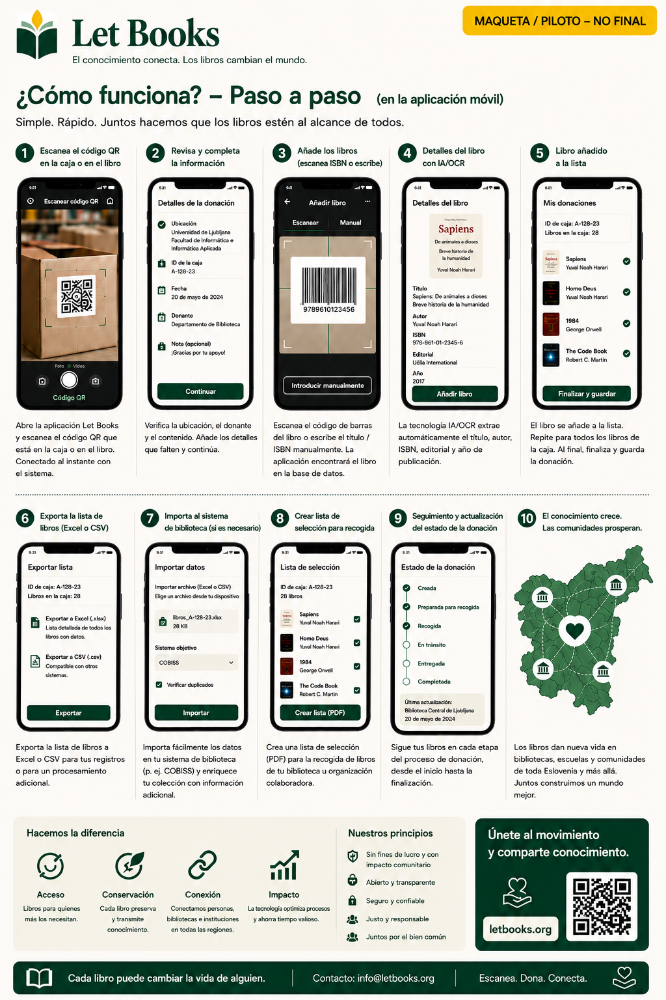

Los textos y flujos de trabajo de esta página describen la dirección del proyecto, no una implantación de producción terminada.
Guía para particulares
Cataloga tu primera caja sin convertirlo todo en un gran proyecto.
Esta página es para donantes privados, familias, voluntarios y pequeñas organizaciones que quieren conservar libros importantes y después ofrecerlos y encontrarlos con más facilidad.

Cuándo esta guía es para ti
- Tienes libros en casa, en almacén o en una oficina.
- Quieres saber qué hay en cada caja antes de ofrecer algo.
- Necesitas un flujo móvil con menos escritura.
- Más adelante quizá dones a una o varias bibliotecas.
Cómo se ve el éxito
- Escaneas una caja y ves su contenido.
- Añades un libro nuevo en pocos segundos.
- Exportas una lista limpia para revisión.
- Vuelves a encontrar los ejemplares solicitados cuando llega el momento de recogerlos.
Flujo rápido de trabajo
El primer recorrido debe ser lo bastante rápido para estanterías y cajas reales.
Escanea las cajas QR
Abre el contexto correcto de ubicación antes de introducir datos.
Fotografía la portada
La portada sigue siendo la referencia visual principal para revisar.
Escanea o escribe el ISBN
Si es visible, úsalo. Si no, guarda primero y enriquece después.
Guarda y continúa
La captura rápida no debe exigir una bibliografía completa antes del siguiente libro.
Exporta para revisión
Prepara un lote para la biblioteca o entidad socia.
Crea la lista de recogida
Los libros solicitados se agrupan por sala, estantería y caja.
Qué es más importante registrar
Título, autor, año cuando sea visible, estado del ejemplar y ubicación exacta. Son los datos que más tarde hacen viable la donación.
La IA como ayuda, no como autoridad
Si más adelante se activan OCR o sugerencias de metadatos, trátalos como propuestas que requieren verificación humana.
Ejemplo: Una familia hereda la biblioteca técnica de un profesor, etiqueta las cajas, fotografía las portadas, exporta un lote para revisión y más tarde encuentra exactamente los ejemplares que la biblioteca solicita.